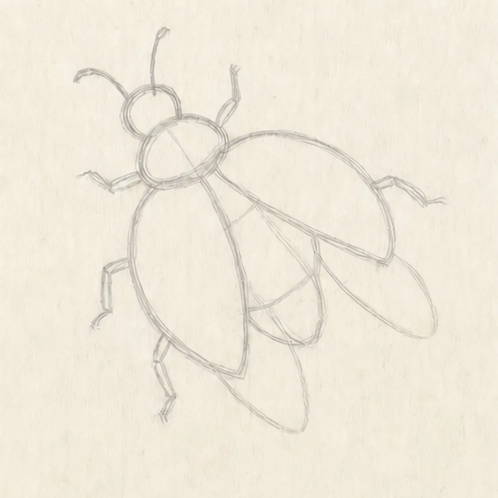
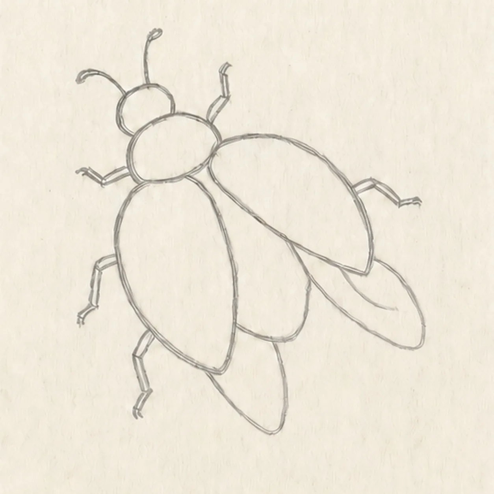
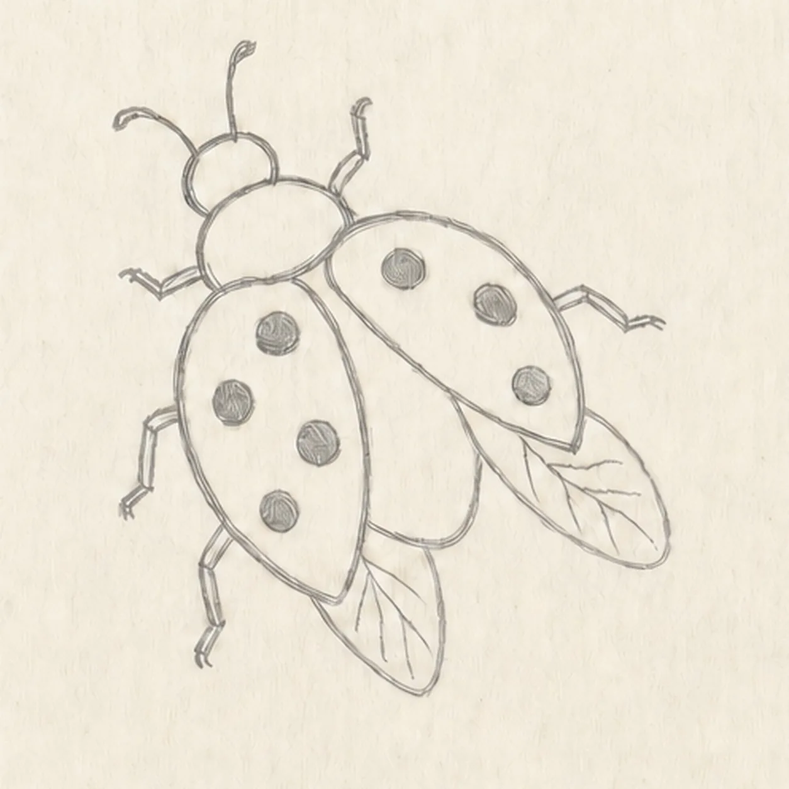
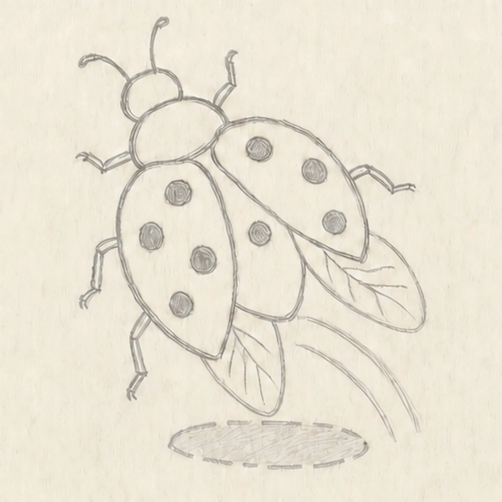
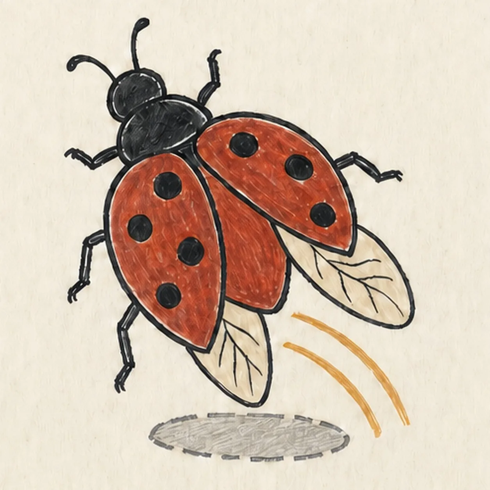

Felt-tip marker mode
Let's draw a cartoon ladybug in flight
Treat this as one playful practice round: sketch the idea loosely, simplify the shapes, then commit with confident marker outlines and bright fills.
-
01

Aim the takeoff guides
Place one light diagonal body axis, build the head, thorax, and abdomen, then reserve two spread wing cases, two flight wings, six leg axes, and two antenna routes.
Marker tip: Ghost the full body axis first and keep both wing-case envelopes related to it. Count the six leg routes before drawing over the construction.
-
02

Shape the flying ladybug
Wrap the guides with the face-free head and thorax, two spread wing cases, two pale flight wings, exactly six bent legs, and two curved antennae.
Marker tip: Stop hidden flight-wing edges cleanly beneath the red cases. Compare the paper openings around the four wings so the overlaps stay easy to read.
-
03

Dot the wing cases
Add exactly seven uneven spots across the two established wing cases and a few simple vein lines inside the two existing flight wings.
Marker tip: Place four spots on the left case and three on the right, varying their sizes slightly. Keep every spot away from the exposed red abdomen between the cases.
-
04

Add the takeoff motion
Draw exactly two curved mustard action arcs behind the ladybug and one shallow broken warm-gray oval shadow beneath the flying silhouette.
Marker tip: Aim both arcs along the same takeoff direction and keep them clear of the legs. The separated shadow should make the insect feel airborne.
-
05

Ink and color the ladybug
Thicken every established contour, fill both wing cases brick red, the head and seven spots black, both flight wings cream, the action arcs mustard, and the shadow warm gray.
Marker tip: Pull the red marker strokes along each wing-case curve and leave small paper gaps. Let the color dry before reinforcing the black outline and spots.
-
06
Lift off with the final lines
Strengthen the keeper outlines and clarify the established wing overlaps, seven spots, flight-wing veins, natural marker fills, paper highlights, two arcs, and shadow.
Marker tip: Count two wing cases, two flight wings, six legs, two antennae, and seven spots, then stop. A face, flower, scenery, sticker edge, or badge frame would make a different lesson.
![Handmade felt-tip marker drawing of one face-free upright cartoon hourglass with exactly two rounded teal caps, exactly two attached coral side pillars, one pale-aqua pinched glass vessel, one curved upper golden-yellow sand bed, one centered falling sand stream, one rounded lower sand pile, exactly two open-paper glass highlights, exactly three yellow four-point sparkles, exactly four deep-navy cap notches, thick imperfect black outlines, visible directional marker texture, and one broken deep-navy ground shadow](../assets/cartoon-hourglass-with-flowing-sand-finished-v1.webp)
![Handmade felt-tip marker drawing of one face-free upright teal cartoon walkie-talkie leaning slightly right with one top-left antenna, exactly two coral top knobs, one attached coral push-to-talk button on the upper-left side, one blank pale-aqua rounded screen with a dark bezel, exactly five horizontal deep-navy speaker slots, exactly two yellow radio-wave arcs above the antenna, exactly two open-paper case highlights, exactly four lower grip ribs arranged two per side, thick imperfect black outlines, visible directional marker texture, and one broken deep-navy ground shadow](../assets/cartoon-walkie-talkie-finished-v1.webp)